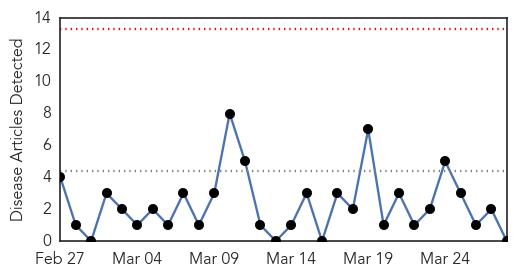
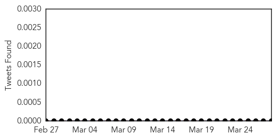
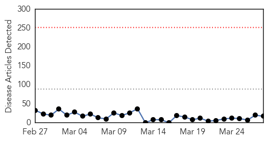
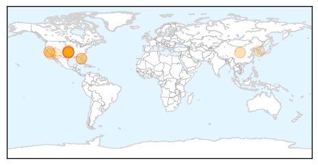
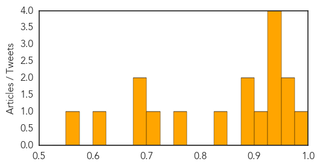

Meningitis
30-Day Web Trend
0 alerts, 0 warnings

30-Day Twitter Trend
0 alerts, 0 warnings

Article Locations


Article Confidences

Top Articles:
-
No articles found for Mar 28, 2015
Top Tweets:
-
No tweets found for Mar 28, 2015
Measles
30-Day Web Trend
0 alerts, 0 warnings

30-Day Twitter Trend
Article Locations
Article Confidences
Top Articles:
- 0.976
- Measles case reported in Stillwater
- 0.972
- Stillwater gets reintroduced to measles, what are the risks?
- 0.963
- Oklahoma reports first measles case since 1997
- 0.931
- First measles case since 1997 reported in Oklahoma
- 0.930
- Oklahoma reports first case of measles in 18 years
- 0.930
- Oklahoma State Department of Health reports State’s First Measles Case since 1997
- 0.926
- Traveler infected with measles visited Sarasota County
- 0.920
- First Oklahoma measles case since 1997
- 0.895
- OSDH Reports First Measles Case in StillWater After 18 Years
- 0.882
- First Measles Case Reported in Oklahoma Since 1997
- 0.841
- Dana Hills High School
- 0.760
- #Measles case in international traveler confirmed in #Osceola County
- 0.700
- News Scan for Mar 27, 2015
- 0.698
- Limited supply of free measles vaccine made available
- 0.676
- Measles Outbreak at Disneyland Hits California Anti-Vaccination Area
- 0.611
- A Glut of Texas 'Pro-Vax' Bills Threaten Vaccination Exemptions
- 0.551
- Measles case in Stillwater is Oklahoma’s first in 18 years
Top Tweets:
-
No tweets found for Mar 28, 2015